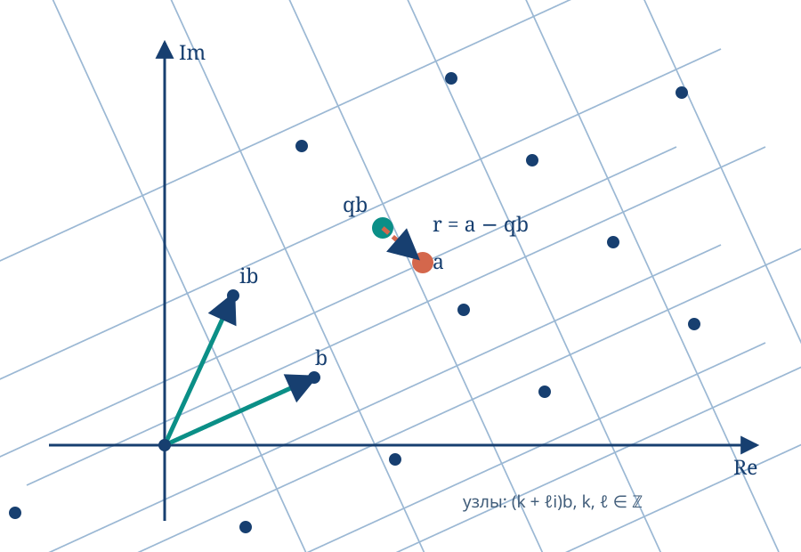

В таком случае \(f\) называется интегрируемой на \([a,b]\). Обозначение: \(I=\int_a^b f(x)\,dx\).
\(f(x)\equiv C\Rightarrow f\) интегрируема на \([a,b]\) и \(\int_a^b C\,dx=C(b-a)\).
Утверждение Если \(f\) интегрируема на \([a,b]\), то \(f\) ограничена на \([a,b]\).
Предположим, что \(f\) неограничена, \(T=\{x_k\}\). Тогда \(f\) не ограничена на некотором \([x_{k_0-1},x_{k_0}]\). Выберем \(c_k\) при \(k\ne k_0\) произвольно. Точку \(c_{k_0}\) можно выбрать так, что \(f(c_{k_0})\) достаточно велико по модулю; тогда \(\sigma(f,T,C)\) будет сколь угодно большой по модулю.
1.2 Сумма Дарбу
Определение: \([a,b]\), \(T=\{x_k\}\) — разбиение, \(f:[a,b]\to\mathbb R\) — ограничена. \(m_k=\inf_{[x_{k-1},x_k]}f\), \(M_k=\sup_{[x_{k-1},x_k]}f\), \(\Delta_k=x_k-x_{k-1}\). \(s(f,T)=\sum_{k=1}^n m_k\Delta_k\), \(S(f,T)=\sum_{k=1}^n M_k\Delta_k\) — нижняя и верхняя суммы Дарбу.
\(f(c_k)\le M_k\Rightarrow f(c_k)\Delta_k\le M_k\Delta_k\Rightarrow\sigma(f,T,C)\le S(f,T)\). Для каждого \(k=1,\dots,n\) подберём \(c_k\), такое что \(f(c_k)>M_k-\dfrac{\varepsilon}{b-a}\). Тогда \(\sigma(f,T,C)=\sum_{k=1}^n f(c_k)\Delta_k>\sum_{k=1}^n M_k\Delta_k-\dfrac{\varepsilon}{b-a}\sum_{k=1}^n\Delta_k=S(f,T)-\varepsilon\). Для нижней суммы рассуждение аналогично.
Свойство 2 От добавления точки в разбиение верхняя сумма не увеличивается, а нижняя — не уменьшается.
Пусть добавлена точка \(c\in[x_{k_0-1},x_{k_0}]\). Обозначим \(M'=\sup_{[x_{k_0-1},c]}f\), \(M''=\sup_{[c,x_{k_0}]}f\). Тогда \(M',M''\le M_{k_0}\). Было: \(\dots+M_{k_0}(x_{k_0}-x_{k_0-1})\). Стало: \(\dots+M'(c-x_{k_0-1})+M''(x_{k_0}-c)\le M_{k_0}(c-x_{k_0-1})+M_{k_0}(x_{k_0}-c)\). Для нижней суммы аналогично.
Свойство 3 Любая нижняя сумма Дарбу не превосходит любую верхнюю.
Пусть \(T_1,T_2\) — разбиения и \(\widetilde T=T_1\cup T_2\). Тогда \(s(f,T_1)\le s(f,\widetilde T)\le S(f,\widetilde T)\le S(f,T_2)\).
Определение: \(I_*\overset{\mathrm{def}}=\sup_Ts(f,T)\), \(I^*\overset{\mathrm{def}}=\inf_TS(f,T)\) — нижний и верхний интегралы Дарбу.
Теорема (критерий интегрируемости) Пусть \(f:[a,b]\to\mathbb R\) ограничена. Тогда \(f\) интегрируема на \([a,b]\) тогда и только тогда, когда \(\forall\varepsilon>0\ \exists\delta>0\), такое что для любого разбиения \(T\) из \(\Delta(T)<\delta\) следует \(S(f,T)-s(f,T)<\varepsilon\).
Доказательство, \(\Rightarrow\) Пусть \(\varepsilon>0\). Возьмём \(\delta>0\) из определения интегрируемости для \(\varepsilon/3\). Тогда из \(\Delta(T)<\delta\) следует \(\lvert\sigma(f,T,C)-I\rvert<\varepsilon/3\) для любого оснащения \(C\). Значит, \(I-\varepsilon/3\le s(f,T)\le I_*\le I^*\le S(f,T)\le I+\varepsilon/3\), поэтому \(S(f,T)-s(f,T)\le2\varepsilon/3<\varepsilon\).
Доказательство, \(\Leftarrow\) Имеем \(s(f,T)\le I_*\le I^*\le S(f,T)\), поэтому \(I^*-I_*\le S(f,T)-s(f,T)\), а правая часть может быть сколь угодно малой. Следовательно, \(I^*=I_*\overset{\mathrm{def}}=I\). Для произвольного оснащения \(C\): \(s(f,T)\le\sigma(f,T,C)\le S(f,T)\) и \(s(f,T)\le I\le S(f,T)\). Поэтому \(\lvert I-\sigma(f,T,C)\rvert\le S(f,T)-s(f,T)<\varepsilon\).
\(I_*\le I^*\).
Если \(f\) непрерывна на \([a,b]\), то \(f\) интегрируема на \([a,b]\).
Пусть \(\varepsilon>0\). По теореме Кантора о равномерной непрерывности найдём \(\delta>0\), для которого \(\lvert t_1-t_2\rvert<\delta\Rightarrow\lvert f(t_1)-f(t_2)\rvert<\varepsilon/(b-a)\). Возьмём разбиение \(T\) с \(\Delta(T)<\delta/2\). Тогда по теореме Вейерштрасса \(M_k-m_k<\varepsilon/(b-a)\), и \(S(f,T)-s(f,T)=\sum_{k=1}^n(M_k-m_k)\Delta_k<\dfrac{\varepsilon}{b-a}\sum_{k=1}^n\Delta_k=\varepsilon\).
Если \(f\) монотонна на \([a,b]\), то \(f\) интегрируема на \([a,b]\).
Без ограничения общности \(f\uparrow\). Тогда \(M_k=f(x_k)\), \(m_k=f(x_{k-1})\), и \(S(f,T)-s(f,T)=\sum_{k=1}^n(f(x_k)-f(x_{k-1}))\Delta_k<\delta\sum_{k=1}^n(f(x_k)-f(x_{k-1}))=\delta(f(b)-f(a))\). Подойдёт \(\delta=\varepsilon/(f(b)-f(a))\). Если \(f(b)=f(a)\), то из монотонности следует \(f\equiv f(a)\) на \([a,b]\).
\(\int_0^1x^2\,dx=1/3\), поскольку \(S_n=\sum_{k=1}^n\dfrac1n\dfrac{k^2}{n^2}=\dfrac{1^2+2^2+\dots+n^2}{n^3}=\dfrac{n(n+1)(2n+1)}{6n^3}\xrightarrow[n\to\infty]{}\dfrac13\).
\(D\) — функция Дирихле. Она не интегрируема ни на одном отрезке.
Для любого \([a,b]\), любого разбиения \(T\) и каждого \(k\) имеем \(M_k=1\), \(m_k=0\). Следовательно, \(S(D,T)-s(D,T)=\sum\Delta_k=b-a\) (!).
Если изменить значение функции в конечном наборе точек, то интегрируемость сохранится и интеграл не изменится.
Пусть значение изменено в \(m\) точках: была \(f\), стала \(\widetilde f\). Если \(\lvert f\rvert\le C_1\), то \(\lvert\widetilde f\rvert\le\widetilde C_1\). Тогда \(\lvert\sigma(f,T,C)-\sigma(\widetilde f,T,C)\rvert\le\underbrace{2m(C_1+\widetilde C_1)}_{\mathrm{const}}\Delta(T)\xrightarrow[\Delta(T)\to0]{}0\).
Теорема (интегрируемость на подотрезках) 1. Если \(f\) интегрируема на \([a,b]\) и \([c,d]\subset[a,b]\), то \(f\) интегрируема на \([c,d]\). 2. Если \(c\in[a,b]\), а \(f\) интегрируема на \([a,c]\) и \([c,b]\), то \(f\) интегрируема на \([a,b]\).
Доказательство пункта 1 Пусть \(\varepsilon>0\). Найдём \(\delta>0\) для \([a,b]\), такое что \(\Delta(T)<\delta\Rightarrow S(f,T)-s(f,T)<\varepsilon\). Если \(T_1\) — разбиение \([c,d]\) с \(\Delta(T_1)<\delta\), дополним его до разбиения \(T\) отрезка \([a,b]\). Тогда \(S(f,T_1)-s(f,T_1)\le S(f,T)-s(f,T)<\varepsilon\).
Доказательство пункта 2 Пусть \(\varepsilon>0\). Найдём \(\delta>0\), подходящее одновременно для разбиений \(T_1\) отрезка \([a,c]\) и \(T_2\) отрезка \([c,b]\), так что \(\Delta(T_i)<\delta\Rightarrow S(f,T_i)-s(f,T_i)<\varepsilon/3\). Пусть \(T\) — разбиение \([a,b]\), \(\Delta(T)<\delta\), и \(c\in[x_{k-1},x_k]\). При \(\lvert f\rvert\le M\) и \(\delta<\varepsilon/(6M)\) получаем \(S(f,T)-s(f,T)=\Sigma_1+(M_k-m_k)\Delta_k+\Sigma_2<\varepsilon/3+\varepsilon/3+\varepsilon/3=\varepsilon\).
Следствие Если \(f\) кусочно непрерывна на \([a,b]\), то \(f\) интегрируема на \([a,b]\).
1.3 Свойства интеграла
1. Аддитивность по отрезку
Пусть \(f\) интегрируема на \([a,b]\), \(c\in(a,b)\). Тогда \(\int_a^bf=\int_a^cf+\int_c^bf\).
По теореме из § 1.2 функция \(f\) интегрируема на \([a,c]\) и \([c,b]\). Разобьём оба отрезка на \(n\) равных частей. Пусть \(\sigma_n'\) — интегральная сумма для \([a,c]\), \(\sigma_n''\) — для \([c,b]\). Тогда \(\sigma_n=\sigma_n'+\sigma_n''\) — интегральная сумма для \([a,b]\). Переходя к пределу при \(n\to\infty\), получаем \(\int_a^bf=\int_a^cf+\int_c^bf\).
Если для \(a>b\) положить по определению \(\int_a^bf=-\int_b^af\), а \(\int_a^af=0\), то аддитивность верна при любом расположении \(a,b,c\), если \(f\) интегрируема на наибольшем отрезке.
Пусть \(f,g\) интегрируемы на \([a,b]\). Тогда \(\lvert f\rvert\) и \(\alpha f+\beta g\) интегрируемы на \([a,b]\).
Для функции \(h\): \(S(h,T)-s(h,T)=\sum_{k=1}^n(M_k-m_k)\Delta_k\). Если \(x,y\in[x_{k-1},x_k]\), то \(\lvert\alpha f(x)+\beta g(x)-\alpha f(y)-\beta g(y)\rvert\le\lvert\alpha\rvert\,\lvert f(x)-f(y)\rvert+\lvert\beta\rvert\,\lvert g(x)-g(y)\rvert\). Следовательно, колебание \(\alpha f+\beta g\) не превосходит суммы соответствующих колебаний \(f\) и \(g\), умноженных на \(\lvert\alpha\rvert\) и \(\lvert\beta\rvert\). Для \(\lvert f\rvert\) используем неравенство \(\bigl\lvert|f(x)|-|f(y)|\bigr\rvert\le|f(x)-f(y)|\).
2. Линейность по функции
Если \(f,g\) интегрируемы на \([a,b]\), \(\alpha,\beta\in\mathbb R\), то \(\int_a^b(\alpha f+\beta g)=\alpha\int_a^bf+\beta\int_a^bg\).
Разобьём отрезок на \(n\) частей. Тогда \(\sigma_n(\alpha f+\beta g)=\alpha\sigma_n(f)+\beta\sigma_n(g)\), поскольку \(\sum(\alpha f(c_k)+\beta g(c_k))\Delta_k=\alpha\sum f(c_k)\Delta_k+\beta\sum g(c_k)\Delta_k\). Переходим к пределу.
3. Монотонность интеграла
Пусть \(f,g\) интегрируемы на \([a,b]\) и \(f\le g\) на \([a,b]\). Тогда \(\int_a^bf\le\int_a^bg\).
Следствие 1 Если \(f\ge0\), то \(\int_a^bf\ge0\).
Следствие 2 Если \(m\le f\le M\), то \(m(b-a)\le\int_a^bf\le M(b-a)\).
Следствие 3 Пусть \(f\ge0\), \(f(x_0)>0\), и \(f\) непрерывна в точке \(x_0\). Тогда \(\int_a^bf>0\).
Из непрерывности в \(x_0\) и \(f(x_0)>0\) следует, что существует окрестность \(U(x_0)\), на которой \(f(x)>\varepsilon>0\). Выберем \([\alpha,\beta]\subset U(x_0)\). Тогда \(\int_a^bf=\underbrace{\int_a^\alpha f}_{\ge0}+\underbrace{\int_\alpha^\beta f}_{>\varepsilon(\beta-\alpha)}+\underbrace{\int_\beta^bf}_{\ge0}>0\).
4. Оценка модуля интеграла
Если \(f\) интегрируема на \([a,b]\), то \(\left|\int_a^bf\right|\le\int_a^b|f|\).
Пусть \(f,g\) интегрируемы на \([a,b]\), \(m\le f(x)\le M\) на \([a,b]\), \(g\ge0\). Тогда \(\int_a^bf(x)g(x)\,dx=\mu\int_a^bg(x)\,dx\), где \(\mu\in[m,M]\).
Из \(mg(x)\le f(x)g(x)\le Mg(x)\) следует \(m\int_a^bg(x)\,dx\le\int_a^bf(x)g(x)\,dx\le M\int_a^bg(x)\,dx\).
Если \(f,g\) интегрируемы на \([a,b]\), то \(fg\) также интегрируема.
\(\lvert f(x)g(x)-f(y)g(y)\rvert=\lvert f(x)g(x)-f(x)g(y)+f(x)g(y)-f(y)g(y)\rvert\le|f(x)|\,|g(x)-g(y)|+|g(y)|\,|f(x)-f(y)|\). Ограниченность \(f,g\) и критерий Дарбу дают требуемое.
Следствие 1 Пусть \(f\) непрерывна на \([a,b]\), \(g\) интегрируема и \(g\ge0\). Тогда существует \(c\in[a,b]\), для которого \(\int_a^bf(x)g(x)\,dx=f(c)\int_a^bg(x)\,dx\).
Следствие 2 Если \(f\) интегрируема на \([a,b]\), то существует \(\mu\), такое что \(\int_a^bf(x)\,dx=\mu(b-a)\).
Следствие 3 Если \(f\) непрерывна на \([a,b]\), то существует \(c\in[a,b]\), для которого \(\int_a^bf(x)\,dx=f(c)(b-a)\).
1.4 Интеграл с переменным верхним пределом. Первообразная
Определение: Пусть \(f\) интегрируема на \([a,b]\). Функция \(\Phi(x)=\int_a^xf\), \(x\in[a,b]\), называется интегралом с переменным верхним пределом.
Теорема Барроу Пусть \(f\) непрерывна в точке \(x_0\), а \(\Phi\) определена в окрестности \(x_0\). Тогда \(\Phi'(x_0)=f(x_0)\).
Докажем по определению: \(\left|\dfrac{\Phi(x_0+h)-\Phi(x_0)}h-f(x_0)\right|=\left|\dfrac1h\left(\int_a^{x_0+h}f-\int_a^{x_0}f\right)-\dfrac1h\int_{x_0}^{x_0+h}f(x_0)\right|\) \(=\left|\dfrac1h\int_{x_0}^{x_0+h}(f(x)-f(x_0))\,dx\right|\le\dfrac1{|h|}\left|\int_{x_0}^{x_0+h}|f(x)-f(x_0)|\,dx\right|.\) По непрерывности в \(x_0\), для любого \(\varepsilon>0\) существует \(\delta>0\), такое что \(|x-x_0|<\delta\Rightarrow|f(x)-f(x_0)|<\varepsilon\). Поэтому при \(|h|<\delta\) последнее выражение не превосходит \(|h|\varepsilon/|h|=\varepsilon\).
Определение: Пусть \(A\subset\mathbb R\). Функция \(F\) называется первообразной функции \(f\) на \(A\), если \(F'(x)=f(x)\) для всех \(x\in A\).
Утверждение Пусть \(F_1,F_2\) — первообразные \(f\) на \(\langle a,b\rangle\). Тогда \(F_1-F_2=\mathrm{const}\).
Положим \(g(x)=F_1(x)-F_2(x)\). Для каждого \(x\in\langle a,b\rangle\) имеем \(g'(x)=F_1'(x)-F_2'(x)=0\). Для любых \(x_1,x_2\in\langle a,b\rangle\) по теореме Лагранжа существует \(c\in\langle x_1,x_2\rangle\), такое что \(g(x_1)-g(x_2)=g'(c)(x_1-x_2)=0\). Значит, \(g\) постоянна.
Теорема (формула Ньютона–Лейбница) Пусть \(F\) — первообразная \(f\) на \([a,b]\), а \(f\) интегрируема на \([a,b]\). Тогда \(\int_a^bf(x)\,dx=F(b)-F(a)=F(x)\big|_a^b\).
Функция \(\Phi(x)=\int_a^xf\) является первообразной \(f\). Поэтому \(\Phi=F+C\), и \(F(b)-F(a)=\Phi(b)-\Phi(a)=\int_a^bf\).
Определение: Пусть \(f:\langle a,b\rangle\to\mathbb R\) и у \(f\) есть первообразная. Неопределённым интегралом \(f\) называется множество всех первообразных \(f\) на \(\langle a,b\rangle\). Обозначение: \(\int f(x)\,dx\).
\(\int f(x)\,dx=\{F(x)+C\mid C\in\mathbb R\}\), где \(F\) — некоторая первообразная. Обычно пишут \(\int f(x)\,dx=F(x)+C\).
Утверждение (линейность неопределённого интеграла) Пусть \(f,g\) имеют первообразные на \(\langle a,b\rangle\), \(\alpha,\beta\in\mathbb R\), \(\alpha^2+\beta^2>0\). Тогда \(\alpha f+\beta g\) имеет первообразную и \(\int(\alpha f+\beta g)=\alpha\int f+\beta\int g\).
Пусть \(H\) принадлежит правой части. Тогда \(H=\alpha F+\beta G\), где \(F'=f\), \(G'=g\), поэтому \(H'=\alpha f+\beta g\), то есть \(H\) принадлежит левой части. Обратно, пусть \(H\) принадлежит левой части, а \(F\) — первообразная \(f\). Без ограничения общности \(\beta\ne0\). Положим \(G=(H-\alpha F)/\beta\). Тогда \(G'=(H'-\alpha F')/\beta=(\alpha f+\beta g-\alpha f)/\beta=g\), и \(H=\alpha F+\beta G\).
Теорема о замене переменной в неопределённом интеграле Пусть \(\varphi\) непрерывно дифференцируема. Тогда \(\int f(\varphi(t))\varphi'(t)\,dt=\int f(x)\,dx\), где \(x=\varphi(t)\).
Пусть \(F\) — первообразная \(f\), то есть \(\int f(x)\,dx=F(x)+C\). Тогда \((F(\varphi(t)))'=F'(\varphi(t))\varphi'(t)=f(\varphi(t))\varphi'(t)\).
\(\int\sqrt{1-x^2}\,dx=\left[\begin{array}{l}x=\cos t\\dx=-\sin t\,dt\end{array}\right]=\int-\sin^2t\,dt=\dfrac12\int(\cos2t-1)\,dt\) \(=\dfrac14\sin2t-\dfrac12t+C=\dfrac12x\sqrt{1-x^2}-\dfrac12\arccos x+C\). Поэтому \(\int_{-1}^1\sqrt{1-x^2}\,dx=F(1)-F(-1)=-\dfrac12\arccos1+\dfrac12\arccos(-1)=\dfrac\pi2\).
Теорема (интегрирование по частям) Пусть \(f,g\) дифференцируемы и функция \(fg'\) имеет первообразную. Тогда \(f'g\) также имеет первообразную и \(\int f'g=fg-\int fg'\).
\((fg)'=f'g+fg'\Rightarrow f'g=(fg)'-fg'\). Значит, \(\int g(x)\underbrace{f'(x)\,dx}_{df}=f(x)g(x)-\int f(x)\underbrace{g'(x)\,dx}_{dg}\), то есть \(\int g\,df=fg-\int f\,dg\).
Теорема (замена переменной в определённом интеграле) Пусть \(\varphi:[\alpha,\beta]\to[A,B]\), \(\varphi\) дифференцируема на \([\alpha,\beta]\), а \(f\) непрерывна на \([A,B]\). Тогда
Пусть \(F\) — первообразная \(f\) на \([A,B]\). Тогда \((F(\varphi(t)))'=F'(\varphi(t))\varphi'(t)=f(\varphi(t))\varphi'(t)\), и \(\int_\alpha^\beta f(\varphi(t))\varphi'(t)\,dt=F(\varphi(t))\big|_\alpha^\beta=F(x)\big|_{\varphi(\alpha)}^{\varphi(\beta)}=\int_{\varphi(\alpha)}^{\varphi(\beta)}f(x)\,dx\).
Теорема (интегрирование по частям) Пусть \(f,g\) непрерывно дифференцируемы на \([a,b]\). Тогда \(\int_a^bf'g=(fg)\big|_a^b-\int_a^bfg'\).
Упражнения
\(\int_{-\pi/4}^{\pi/4}\ln(\cos x)\sin x\,dx\).
\(\int_1^2x^2e^x\,dx\).
\(\int_0^1x\sqrt{1-x^2}\,dx\).
\(\int_0^1\operatorname{arctg}x\,dx\).
Утверждение 1. Если \(f\) нечётная, то \(\int_{-a}^af=0\). 2. Если \(f\) чётная, то \(\int_{-a}^af=2\int_0^af\).
Для нечётной функции заменой \(x=-t\) получаем \(\int_{-a}^0f(x)\,dx=-\int_a^0f(-t)\,dt=\int_0^a-f(t)\,dt=-\int_0^af(t)\,dt\). Следовательно, интеграл на симметричном отрезке равен нулю. Для чётной функции аналогично обе половины интеграла равны.
Утверждение Пусть \(f\) периодическая с периодом \(T\). Тогда для любого \(a\) выполняется \(\int_a^{a+T}f=\int_0^Tf\).
Сдвигом на целое число периодов приведём \(a\) к \(a_0\in[0,T)\). Тогда \(\int_a^{a+T}f(x)\,dx=\int_{a_0}^{a_0+T}f(x)\,dx=\int_{a_0}^0f(x)\,dx+\int_0^{a_0+T}f(x)\,dx\) \(=\int_{a_0+T}^Tf(x)\,dx+\int_0^{a_0+T}f(x)\,dx=\int_0^Tf(x)\,dx\).
1.7 Квадрируемость. Интеграл как площадь
Определение: Пусть \(\mathcal P\) — множество всех многоугольных фигур, \(A\) — множество точек плоскости. \(S_*(A)=\sup_{P\in\mathcal P,\,P\subset A}S(P)\) — внутренняя площадь. \(S^*(A)=\inf_{P\in\mathcal P,\,P\supset A}S(P)\) — внешняя площадь. Если \(S^*(A)=S_*(A)\), то множество \(A\) называется квадрируемым, а их общее значение — площадью \(A\).
Пусть \(A=K\cap\mathbb Q^2\), где \(K\) — единичный квадрат. Тогда \(S_*(A)=0\), а \(S^*(A)=1\).
Определение: Пусть \(f\ge0\) на \([a,b]\). Подграфиком \(f\) называется множество \(\{(x,y)\mid x\in[a,b],\ 0\le y\le f(x)\}\).
Ограниченное множество \(A\) квадрируемо тогда и только тогда, когда для каждого \(\varepsilon>0\) существуют \(P,Q\in\mathcal P\), такие что \(P\subset A\subset Q\) и \(S(Q)-S(P)<\varepsilon\).
Пусть \(f\) интегрируема и неотрицательна на \([a,b]\). Тогда подграфик \(f\) квадрируем и \(S_{\mathrm{подгр}}=\int_a^bf(x)\,dx\).
Пусть \(\varepsilon>0\). Выберем разбиение \(T\) отрезка \([a,b]\), для которого \(S(f,T)-s(f,T)<\varepsilon\). Прямоугольники высот \(m_k\) образуют внутреннюю многоугольную фигуру площади \(s(f,T)\), а прямоугольники высот \(M_k\) — внешнюю фигуру площади \(S(f,T)\). Разность их площадей меньше \(\varepsilon\), поэтому подграфик квадрируем. Переход к общей площади даёт \(S_{\mathrm{подгр}}=\int_a^bf(x)\,dx\).
Теория чисел
§ 1. Лемма об уточнении показателя
Пусть \(r\in\mathbb Q\) и \(r=p^k\dfrac ab\), где \(k\in\mathbb Z\), \(p\nmid a\), \(p\nmid b\). Тогда \(p\)-адическая валюация равна \(v_p(r)=k\), а \(p\)-адическая норма — \(\lvert r\rvert_p=p^{-v_p(r)}\).
Теорема (LTE-лемма) Пусть \(a,b\in\mathbb Z\), \(n\in\mathbb N\), \(p\in\mathbb P\), \(p\nmid a\), \(p\nmid b\) и \(p\mid(a-b)\). При \(p\ne2\), а также при \(p=2\) и дополнительном условии \(4\mid(a-b)\), выполняется равенство
\[v_p(a^n-b^n)=v_p(a-b)+v_p(n)\]
1. Случай \(p\nmid n\). Разложим разность степеней: \(a^n-b^n=(a-b)(a^{n-1}+a^{n-2}b+\dots+b^{n-1})\). Вторая скобка сравнима с \(na^{n-1}\not\equiv0\pmod p\). Поэтому \(v_p(a^n-b^n)=v_p(a-b)\).
У первого слагаемого валюация равна \(v_p(a-b)+1\). Все остальные слагаемые имеют строго большую валюацию: при \(2\le k\le p-1\) дополнительно используется \(p\mid\binom pk\), а для последнего слагаемого — условие \(p\ne2\) либо \(4\mid(a-b)\). Следовательно, \(v_p(a^p-b^p)=v_p(a-b)+1\).
3. Общий случай. Пусть \(n=kp^\alpha\), где \(p\nmid k\). Применим случай \(n=p\) ровно \(\alpha\) раз, а затем случай \(p\nmid n\):
Делимость порядка Если \(a^s\equiv1\pmod p\), то \(\operatorname{ord}_p a\mid s\).
Пусть \(p\in\mathbb P\) — нечётное простое, \(x=\dfrac{p^p+1}{p+1}\), а \(q\in\mathbb P\) и \(q\mid x\). Предположим, что \(q\mid(p+1)\). По LTE \(v_q(p^p+1)=v_q(p+1)+v_q(p)=v_q(p+1)\), что противоречит \(q\mid x\). Значит, \(p^p\equiv-1\pmod q\), но \(p\not\equiv-1\pmod q\), поэтому \(\operatorname{ord}_q p=2p\). Отсюда \(2p\mid(q-1)\), в частности \(q\equiv1\pmod p\).
Теорема Дирихле Если \((a,b)=1\), то в арифметической прогрессии \(an+b\) бесконечно много простых чисел.
§ 2. Квадратичные вычеты
Квадратичный вычет — Пусть \(p\in\mathbb P\) — нечётное простое, \(a\in\mathbb F_p\), \(a\ne0\). Число \(a\) называется квадратичным вычетом по модулю \(p\), если существует \(x\in\mathbb F_p\), для которого \(x^2=a\).
Для нечётного простого \(p\) из \(x^2=a\) следует \((-x)^2=a\). Кроме того, \(x^2\equiv y^2\pmod p\Rightarrow p\mid(x-y)(x+y)\). Поэтому \(1^2,2^2,\ldots,\left(\frac{p-1}{2}\right)^2\) — в точности все ненулевые квадратичные вычеты по модулю \(p\).
Символ Лежандра — Для нечётного простого \(p\) символ Лежандра определяется формулой
Квадратичные вычеты — в точности все корни многочлена \(x^{(p-1)/2}-1\). Поэтому \(a\) — квадратичный вычет тогда и только тогда, когда \(a^{(p-1)/2}\equiv1\pmod p\). Из \(x^{p-1}-1=(x^{(p-1)/2}-1)(x^{(p-1)/2}+1)\) следует, что для невычетов значение равно \(-1\).
Свойства символа Лежандра
\(\left(\frac1p\right)=1\), \(\left(\frac{-1}{p}\right)=(-1)^{(p-1)/2}\), \(\left(\frac{x^2}{p}\right)=1\) при \(p\nmid x\).
\(\left(\frac{ab^2}{p}\right)=\left(\frac ap\right)\) при \(p\nmid b\).
Если \(a=\prod q_i^{\alpha_i}\), то \(\left(\frac ap\right)=\prod_{2\nmid\alpha_i}\left(\frac{q_i}{p}\right)\).
Теорема (критерий Гаусса) Пусть \(p\) — нечётное простое и \(p\nmid a\). Тогда \(\left(\frac ap\right)=(-1)^\ell\), где \(\ell\) — количество чисел среди \(a,2a,\ldots,\frac{p-1}{2}a\), у которых наименьший по абсолютной величине вычет отрицателен.
Сравним с единицей числа \(\pm1,\pm2,\ldots,\pm\frac{p-1}{2}\). Если два наименьших по абсолютной величине вычета совпадают, то \(r_i=r_j\Rightarrow(\pm i)a\equiv(\pm j)a\pmod p\), откуда \(i=j\). Значит, \(\{r_1,\ldots,r_{(p-1)/2}\}=\{1,2,\ldots,(p-1)/2\}\). Перемножая сравнения, получаем
По критерию Эйлера отсюда следует требуемое равенство.
Второе дополнение к закону взаимности Для нечётного простого \(p\) выполняется \(\left(\frac2p\right)=(-1)^{(p^2-1)/8}\).
Рассмотрим \(2,4,\ldots,p-1\). У \(\lfloor p/4\rfloor\) из них положительный наименьший вычет. Поэтому \(\ell=\frac{p-1}{2}-\lfloor p/4\rfloor\). Отсюда \(2\mid\ell\iff p\equiv1,7\pmod8\), а \(2\nmid\ell\iff p\equiv3,5\pmod8\).
Символ Якоби — Пусть \(m\in\mathbb N\), \(2\nmid m\), \(m=p_1\cdots p_k\), причём простые множители могут совпадать. Тогда \(\left(\frac am\right)\stackrel{\mathrm{def}}=\left(\frac a{p_1}\right)\cdots\left(\frac a{p_k}\right)\).
\(\left(\frac2{15}\right)=\left(\frac23\right)\left(\frac25\right)=1\), но \(2\) — невычет по модулю \(15\).
Выполняются свойства символа Лежандра; формулы для \(\left(\frac{-1}{m}\right)\) и \(\left(\frac2m\right)\) рассматриваются отдельно.
Критерий Эйлера в общем случае неверен: \(\left(\frac7{15}\right)=\left(\frac75\right)\left(\frac73\right)=-1\).
\(\left(\frac{-1}{m}\right)=(-1)^{(m-1)/2}\), поскольку \(\frac{p_1-1}{2}+\cdots+\frac{p_k-1}{2}\equiv\frac{p_1\cdots p_k-1}{2}\pmod2\).
\(\left(\frac2m\right)=(-1)^{(m^2-1)/8}\).
§ 3. Квадратичный закон взаимности
Пусть \(p,q\in\mathbb P\), \(p\ne q\), \(2\nmid p\), \(2\nmid q\). Тогда
По критерию Гаусса \(\left(\frac pq\right)=(-1)^{\ell_1}\), где \(\ell_1\) — число таких \(x=1,\ldots,\frac{q-1}{2}\), для которых наименьший по абсолютной величине вычет \(px\) отрицателен. Для каждого такого \(x\) существует не более одного \(y\), причём \(-q/2<px-qy<0\), \(y>0\) и \(y\le(p-1)/2\). Поэтому \(\ell_1\) считает пары \((x,y)\) из прямоугольника \(1\le x\le(q-1)/2\), \(1\le y\le(p-1)/2\), для которых \(-q/2<px-qy<0\). Аналогично, \(\left(\frac qp\right)=(-1)^{\ell_2}\), где \(0<px-qy<p/2\). Значит, произведение символов равно \((-1)^\ell\), где \(\ell\) — число пар с \(-q/2<px-qy<p/2\).
Это отображение разбивает пары на пары, кроме возможной неподвижной точки. Она существует тогда и только тогда, когда \(q=4x-1\) и \(p=4y-1\), то есть \(p\equiv q\equiv3\pmod4\). Поэтому \(\ell\) нечётно ровно в этом случае.
Доказательство Руссо Рассмотрим \(\mathbb Z_{pq}^{*}=\{k=1,\ldots,pq-1\mid(k,pq)=1\}\) и его образ в \(\mathbb Z_p^{*}\times\mathbb Z_q^{*}\). Положим \(A=\{(a,b)\mid1\le a\le(p-1)/2,1\le b\le q-1\}\), \(B=\{(a,b)\mid1\le a\le p-1,1\le b\le(q-1)/2\}\), \(C=\{k\le(pq-1)/2\mid(k,pq)=1\}\). По китайской теореме об остатках произведение всех элементов равно \(((p-1)!)^{q-1},((q-1)!)^{p-1})=(1,1)\). Попарное объединение элемента с противоположным показывает, что произведения по \(A,B,C\) различаются только знаками. Их сравнение по модулю \(p\) и \(q\) даёт множители \(\left(\frac qp\right)\) и \(\left(\frac pq\right)\); при переходе от \(A\) к \(B\) меняется \((p-1)(q-1)/4\) знаков. Отсюда следует закон взаимности.
Лемма Эйзенштейна Пусть \(p\) — нечётное простое и \(p\nmid a\). Тогда \(\left(\frac ap\right)=(-1)^{\sum_{i=1}^{(p-1)/2}\lfloor2ai/p\rfloor}\).
Для \(i=1,\ldots,(p-1)/2\) положим \(t_i=\lfloor2ai/p\rfloor\). Тогда \(t_ip/2<ai<(t_i+1)p/2\); равенство на границе невозможно, поскольку \(p\nmid ai\). Если \(t_i=2m\), то \(mp<ai<mp+p/2\), поэтому наименьший по абсолютной величине вычет числа \(ai\) положителен. Если \(t_i=2m+1\), то \(mp+p/2<ai<(m+1)p\), поэтому этот вычет отрицателен. Следовательно, число отрицательных наименьших вычетов сравнимо по модулю \(2\) с \(\sum_i t_i\). По критерию Гаусса получаем требуемую формулу.
Геометрическая интерпретация. Пусть \(\ell\ne p\) — нечётное простое. При \(a=\ell\) сумма \(\sum_{i=1}^{(p-1)/2}\lfloor2\ell i/p\rfloor\) равна числу целых узлов \((2i,j)\) на чётных вертикалях \(x=2i\), лежащих ниже прямой \(y=(\ell/p)x\) в треугольнике \(ABC\). Обозначим через \(E(S)\) и \(O(S)\) числа узлов области \(S\) с чётной и нечётной абсциссой соответственно.
Пример \(p=11\), \(\ell=7\). Бирюзовые узлы на чётных вертикалях под \(AB\) дают сумму из леммы Эйзенштейна. Центральная симметрия относительно \(M\) сопоставляет чётные узлы \(BMT\) нечётным узлам \(AML\).
В правой половине \(E(LMBC)\equiv E(BMT)\pmod2\): на каждой чётной вертикали эти области вместе содержат \(\ell-1\) узлов, а \(\ell-1\) чётно. Поворот на \(180^\circ\) относительно \(M\) переводит \(BMT\) в \(AML\) и меняет чётность абсциссы, поэтому \(E(BMT)=O(AML)\). Следовательно, \(E(ABC)\equiv E(AML)+O(AML)=\#AML\pmod2\), откуда \(\left(\frac{\ell}{p}\right)=(-1)^{\#AML}\). Аналогично, \(\left(\frac p\ell\right)=(-1)^{\#AMK}\). На отрезке \(AM\) нет целых узлов, поскольку \(p\ne\ell\) — простые, поэтому \(\#AML+\#AMK=\frac{p-1}{2}\frac{\ell-1}{2}\). Это даёт квадратичный закон взаимности.
Квадратичный закон взаимности для символов Якоби Пусть \(m,n\in\mathbb N\), \(m,n>1\), \(2\nmid m\), \(2\nmid n\). Тогда \(\left(\frac mn\right)\left(\frac nm\right)=(-1)^{(m-1)(n-1)/4}\).
Пусть \(m=p_1\cdots p_k\), \(n=q_1\cdots q_\ell\). Перемножая закон взаимности для всех пар \((p_i,q_j)\), получаем показатель \(\left(\sum_i(p_i-1)/2\right)\left(\sum_j(q_j-1)/2\right)\equiv(m-1)(n-1)/4\pmod2\).
Первообразный корень — Пусть \(m\in\mathbb N\). Число \(g\) называется первообразным корнем по модулю \(m\), если \(\operatorname{ord}_m g=\varphi(m)\). Тогда \(g,g^2,\ldots,g^{\varphi(m)}\) — приведённая система вычетов по модулю \(m\).
Для каждого простого \(p\) существует первообразный корень по модулю \(p\).
Первое доказательство Пусть \(p-1=p_1^{\alpha_1}\cdots p_k^{\alpha_k}\). Для каждого \(i\) многочлен \(x^{(p-1)/p_i}-1\) имеет не более \((p-1)/p_i\) корней, поэтому найдётся \(y_i\), для которого \(y_i^{(p-1)/p_i}\not\equiv1\pmod p\). Положим \(x_i=y_i^{(p-1)/p_i^{\alpha_i}}\). Тогда \(\operatorname{ord}_p x_i=p_i^{\alpha_i}\). Перемножая элементы \(x_i\) и применяя вспомогательное утверждение, получаем элемент порядка \(p-1\).
Вспомогательное утверждение Если \(\operatorname{ord}_p x=a\), \(\operatorname{ord}_p y=b\), \((a,b)=1\), то \(\operatorname{ord}_p(xy)=ab\). Действительно, из \((xy)^n\equiv1\) следует \(x^{bn}\equiv1\), значит \(a\mid bn\) и \(a\mid n\); аналогично \(b\mid n\), поэтому \(ab\mid n\).
Второе доказательство Используем тождество \(\sum_{d\mid n}\varphi(d)=n\). Оно получается, если выписать дроби \(1/n,2/n,\ldots,n/n\) и после сокращения сгруппировать их по знаменателям. Пусть \(N_d\) — число элементов порядка \(d\) в \(\mathbb F_p^*\). Если такой элемент \(x\) существует, то \(x^k\) имеет порядок \(d\) ровно при \((k,d)=1\), поэтому в циклической подгруппе \(\langle x\rangle\) имеется \(\varphi(d)\) таких элементов. Эта подгруппа уже содержит все \(d\) корней многочлена \(X^d-1\), следовательно, \(N_d=\varphi(d)\); если элемента порядка \(d\) нет, то \(N_d=0\). Но \(\sum_{d\mid p-1}N_d=p-1=\sum_{d\mid p-1}\varphi(d)\). Значит, \(N_d=\varphi(d)\) для каждого \(d\mid p-1\), и в частности существует элемент порядка \(p-1\).
Первообразный корень по модулю \(m\) существует тогда и только тогда, когда \(m=2,4,p^n,2p^n\), где \(p\) — нечётное простое, \(n\in\mathbb N\).
Доказательство. Существование Для \(m=2\) подходит \(1\), для \(m=4\) — \(3\). Пусть \(p\) — нечётное простое и \(\xi\) — первообразный корень по модулю \(p\). Если \(\xi^{p-1}\equiv1\pmod{p^2}\), заменим \(\xi\) на \(\xi+p\); биномиальное разложение показывает, что новый элемент уже не сравним с \(1\) после возведения в степень \(p-1\) по модулю \(p^2\). Поэтому можно считать, что \(v_p(\xi^{p-1}-1)=1\). По LTE
Значит, \(\operatorname{ord}_{p^n}\xi=p^{n-1}(p-1)=\varphi(p^n)\). Тот же нечётный представитель является первообразным по модулю \(2p^n\), поскольку \(\varphi(2p^n)=\varphi(p^n)\).
Доказательство. Необходимость Пусть \(m=2^\alpha p_1^{\alpha_1}\cdots p_k^{\alpha_k}\), где \(p_i\) — различные нечётные простые. Порядок элемента по модулю \(m\) является наименьшим общим кратным его порядков по простым степеням. Если \(k\ge2\), числа \(\varphi(p_i^{\alpha_i})\) имеют общий множитель \(2\), поэтому их НОК меньше произведения и порядок не может равняться \(\varphi(m)\). Если \(\alpha\ge3\), то для любого нечётного \(x\) выполняется \(x^{2^{\alpha-2}}\equiv1\pmod{2^\alpha}\), так что первообразного корня по модулю \(2^\alpha\) нет. Наконец, множитель \(4\) нельзя сочетать с нечётной простой степенью: \(\varphi(4)=2\) и \(\varphi(p^n)\) снова имеют общий множитель \(2\). Остаются ровно \(2,4,p^n,2p^n\).
§ 5. Сравнения с неизвестными
Сравнение \(a_nx^n+\dots+a_0\equiv0\pmod p\), где \(p\nmid a_n\), эквивалентно сравнению \(f(x)\equiv0\pmod p\) с примитивным многочленом \(f\).
Любое сравнение \(f(x)\equiv0\pmod p\) можно заменить эквивалентным \(g(x)\equiv0\pmod p\), где \(\deg g<p\).
Разделим \(f\) с остатком на \(x^p-x\): \(f(x)=g_1(x)(x^p-x)+g(x)\). Слагаемое \(g_1(x)(x^p-x)\) равно нулю во всех точках \(\mathbb F_p\), поэтому сравнения эквивалентны.
Любое сравнение \(f(x_1,\ldots,x_n)\equiv0\pmod p\) можно заменить эквивалентным \(g(x_1,\ldots,x_n)\equiv0\pmod p\), где степень \(g\) по каждой переменной меньше \(p\).
Пусть имеется одночлен \(Ax_1^{i_1}\cdots x_n^{i_n}\) с \(i_k\ge p\). Вычтем \(Ax_1^{i_1}\cdots x_k^{i_k-p}\cdots x_n^{i_n}(x_k^p-x_k)\). Степень по \(x_k\) уменьшится, а значения во всех точках не изменятся. Повторяем для каждой переменной.
Если степень \(f\in\mathbb Z[x_1,\ldots,x_n]\) по каждой переменной меньше \(p\) и \(f(x_1,\ldots,x_n)\equiv0\pmod p\) для всех \((x_1,\ldots,x_n)\), то все коэффициенты \(f\) делятся на \(p\).
Теорема Шевалле Пусть \(f\in\mathbb Z[x_1,\ldots,x_n]\), \(\deg f<n\), \(f(0,\ldots,0)=0\). Тогда для каждого \(p\in\mathbb P\) сравнение \(f(x_1,\ldots,x_n)\equiv0\pmod p\) имеет нетривиальное решение.
Предположим, что нулевой набор — единственное решение. Тогда как функции на \(\mathbb F_p^n\) имеем
Степень левой части не превосходит \((p-1)\deg f<n(p-1)\). После редукции степеней по каждой переменной с помощью сравнений \(x_i^p\equiv x_i\) полная степень не возрастает, поэтому одночлен \(x_1^{p-1}\cdots x_n^{p-1}\) слева появиться не может. Справа он входит с коэффициентом \((-1)^{n+1}\) и ни с чем не сокращается. По предыдущей теореме разность не может быть тождественно нулевой как функция — противоречие.
Напоминание: китайская теорема об остатках Если \(m=p_1^{\alpha_1}\cdots p_k^{\alpha_k}\), то \(f(x)\equiv0\pmod m\) равносильно системе сравнений по модулям \(p_i^{\alpha_i}\). Если по модулю \(p_i^{\alpha_i}\) имеется \(\ell_i\) решений, то по модулю \(m\) имеется \(\ell_1\cdots\ell_k\) решений.
Теорема (подъём простого корня) В каждом классе \(\bar a\pmod p\), для которого \(f(a)\equiv0\pmod p\) и \(f'(a)\not\equiv0\pmod p\), решения \(f(x)\equiv0\pmod{p^k}\) образуют один класс по модулю \(p^k\).
Индукция по \(k\). Для перехода рассмотрим числа \(b+tp^k\), \(t=0,\ldots,p-1\), образующие класс \(b\pmod{p^k}\). По формуле Тейлора \(f(b+tp^k)\equiv f(b)+f'(b)tp^k\pmod{p^{k+1}}\). Так как \(p\nmid f'(b)\), значение \(t\) находится единственным образом по модулю \(p\).
Теорема (случай кратного корня) Пусть \(x\equiv a\pmod{p^k}\) — решение и \(f'(a)\equiv0\pmod p\). Тогда: 1) если \(f(a)\not\equiv0\pmod{p^{k+1}}\), среди чисел \(x\equiv a\pmod{p^k}\) нет решений по модулю \(p^{k+1}\); 2) если \(f(a)\equiv0\pmod{p^{k+1}}\), все такие числа удовлетворяют сравнению по модулю \(p^{k+1}\).
Гауссовы целые числа — Множество гауссовых целых чисел — это \(\mathbb Z[i]\stackrel{\mathrm{def}}=\{a+bi\mid a,b\in\mathbb Z\}\).
Арифметические операции в \(\mathbb Z[i]\) наследуются из \(\mathbb C\), поэтому выполняются коммутативность и ассоциативность сложения и умножения, существование нуля, противоположного элемента и единицы, а также дистрибутивность. Следовательно, \(\mathbb Z[i]\) — коммутативное кольцо с единицей.
Норма — Для \(z=a+bi\) положим \(N(z)\stackrel{\mathrm{def}}=a^2+b^2=|z|^2\).
Свойства нормы \(N(z_1z_2)=N(z_1)N(z_2)\). Элемент \(z\) обратим тогда и только тогда, когда \(N(z)=1\). Поэтому множество единиц равно \(U=\{-1,1,-i,i\}\).
Делимость — Для \(z_1,z_2\in\mathbb Z[i]\) пишут \(z_1\mid z_2\), если существует \(z_3\in\mathbb Z[i]\), такое что \(z_2=z_1z_3\).
Свойства делимости
\(z\mid0\) и \(u\mid z\) для любого \(u\in U\).
Если \(z_1\ne0\) и \(z_1\mid z_2\), то частное единственно.
Неприводимый элемент — Элемент \(p\in\mathbb Z[i]\setminus U\) называется неприводимым, если из \(p=ab\) следует, что \(a\in U\) или \(b\in U\). Если \(N(z)\in\mathbb P\), то \(z\) неприводим в \(\mathbb Z[i]\). После доказательства факториальности увидим, что здесь неприводимые элементы являются простыми.
Теорема о делении с остатком Пусть \(a,b\in\mathbb Z[i]\), \(b\ne0\). Тогда существуют \(q,r\in\mathbb Z[i]\), для которых \(a=qb+r\) и \(N(r)<N(b)\).
Рассмотрим \(z=a/b\in\mathbb C\). Округлим отдельно \(\operatorname{Re}z\) и \(\operatorname{Im}z\) до ближайших целых и получим \(q\in\mathbb Z[i]\). Для \(\delta=z-q\) имеем \(|\operatorname{Re}\delta|\le1/2\) и \(|\operatorname{Im}\delta|\le1/2\), поэтому \(|\delta|^2\le1/2\). Положим \(r=a-qb=b\delta\). Тогда \(a=qb+r\) и \(N(r)=N(b)|\delta|^2\le N(b)/2<N(b)\). Геометрически умножение на \(b\) поворачивает и растягивает единичную решётку \(\mathbb Z[i]\), переводя узел \(q\) в \(qb\), а вектор \(\delta\) — в остаток \(r\).

Слева координаты \(a/b\) округляются до ближайшего узла \(q\). Справа умножение на \(b\) переводит центральную единичную ячейку в ячейку решётки \(b\mathbb Z[i]\), а \(a-qb=r\); из оценки половины диагонали следует \(N(r)\le N(b)/2\).
Остаток не обязан быть единственным. Например, \(7+2i=(2+i)(3-i)+i=(1+i)(3-i)+3\).
Наибольший общий делитель — Наибольшим общим делителем \(a,b\in\mathbb Z[i]\) называется общий делитель \(d\), который делится на любой другой общий делитель \(a\) и \(b\). Он определён с точностью до умножения на единицу.
Алгоритм Евклида \(a=q_1b+r_1,\ b=q_2r_1+r_2,\ r_1=q_3r_2+r_3,\ldots\). Нормы строго убывают: \(N(b)>N(r_1)>N(r_2)>\cdots\), поэтому процесс заканчивается. Последний ненулевой остаток делит \(a\) и \(b\) и делится на любой их общий делитель; это \(\gcd(a,b)\).
Линейное представление НОД Если \(d=\gcd(a,b)\), то существуют \(x,y\in\mathbb Z[i]\), для которых \(d=ax+by\). В частности, \(a\) и \(b\) взаимно просты тогда и только тогда, когда \(ax+by=1\) для некоторых \(x,y\in\mathbb Z[i]\).
Основная теорема арифметики для \(\mathbb Z[i]\) Любое целое гауссово число, необратимое и отличное от нуля, раскладывается в произведение неприводимых элементов; разложение единственно с точностью до порядка множителей и умножения их на единицы.
Существование доказывается индукцией по \(N(a)\): если \(a\) не является неприводимым, то \(a=bc\) и \(N(b),N(c)<N(a)\). Для единственности докажем лемму Евклида. Если неприводимый \(p\mid ab\), то либо \(\gcd(p,a)\) ассоциирован с \(p\), и тогда \(p\mid a\), либо \(\gcd(p,a)=1\). Во втором случае равенство Безу \(px+ay=1\) после умножения на \(b\) даёт \(p\mid b\). Теперь неприводимые множители в двух разложениях последовательно сокращаются.
Отступление
Евклидово кольцо — Кольцо \(K\) без делителей нуля называется евклидовым, если существует евклидова норма \(d:K\to\mathbb N\cup\{0\}\), такая что для любых \(a,b\in K\), \(b\ne0\), существуют \(q,r\) с \(a=qb+r\) и \(d(r)<d(b)\).
Неприводимые и простые элементы — Элемент \(p\notin U\) неприводим, если из \(p=ab\) следует \(a\in U\) или \(b\in U\). Элемент \(p\notin U\) прост, если из \(p\mid ab\) следует \(p\mid a\) или \(p\mid b\).
Факториальное кольцо — Кольцо без делителей нуля называется факториальным, если любой ненулевой необратимый элемент раскладывается на неприводимые множители единственным образом с точностью до порядка и единиц. В атомарном кольце единственность такого разложения равносильна тому, что каждый неприводимый элемент прост. Любое евклидово кольцо факториально.
Если \(f\) мультипликативна и \(F(n)=\sum_{d\mid n}f(d)\), то \(F\) мультипликативна.
При \((a,b)=1\) каждый делитель \(d\mid ab\) единственным образом представляется как \(d=d_1d_2\), где \(d_1\mid a\), \(d_2\mid b\). Поэтому \(F(a)F(b)=\sum_{d_1\mid a}f(d_1)\sum_{d_2\mid b}f(d_2)=\sum_{d\mid ab}f(d)=F(ab)\).
\(\sum_{d\mid n}\mu(d)=1\) при \(n=1\) и \(\sum_{d\mid n}\mu(d)=0\) при \(n>1\).
Для \(n=1\) утверждение очевидно. Если \(n=p_1^{\alpha_1}\cdots p_k^{\alpha_k}\), то вклад дают только свободные от квадратов делители: \(1+\sum_i\mu(p_i)+\sum_{i<j}\mu(p_ip_j)+\cdots=1-\binom k1+\binom k2-\cdots+(-1)^k=(1-1)^k=0\).
Другое доказательство теоремы Функция \(\mu\) мультипликативна, значит \(F(n)=\sum_{d\mid n}\mu(d)\) мультипликативна. Для простого \(p\) имеем \(F(p^\alpha)=\mu(1)+\mu(p)=0\), следовательно, \(F(n)=0\) для всех \(n>1\).
Сумма значений функции Эйлера по делителям Функция \(F(n)=\sum_{d\mid n}\varphi(d)\) мультипликативна. Для простой степени \(F(p^\alpha)=1+(p-1)+p(p-1)+\cdots+p^{\alpha-1}(p-1)=p^\alpha\). Поэтому для \(n=p_1^{\alpha_1}\cdots p_k^{\alpha_k}\) получаем \(F(n)=n\).
Теорема (формула обращения Мёбиуса) Если \(F(n)=\sum_{d\mid n}f(d)\), то \(f(n)=\sum_{d\mid n}F(n/d)\mu(d)\).
Переставим суммирование: \(\sum_{d\mid n}F(n/d)\mu(d)=\sum_{d\mid n}(\sum_{d_1\mid n/d}f(d_1))\mu(d)=\sum_{d_1\mid n}f(d_1)\sum_{d\mid n/d_1}\mu(d)\). Внутренняя сумма равна нулю, кроме случая \(n/d_1=1\), то есть \(d_1=n\). Остаётся \(f(n)\).
Если \(\sum_{d\mid n}1=d(n)\), то \(\sum_{k\mid n}d(n/k)\mu(k)=1\).
Из \(\sum_{d\mid n}\varphi(d)=n\) получаем \(\varphi(n)=\sum_{d\mid n}(n/d)\mu(d)=n\sum_{d\mid n}\mu(d)/d=n\prod_{p\mid n}(1-1/p)\).
§ 8. Постулат Бертрана
Для каждого \(n>1\) существует простое число \(p\), такое что \(n<p<2n\).
Лемма 1 Если \(n<p<2n\) и \(p\in\mathbb P\), то \(p\mid\binom{2n-1}{n-1}\).
В произведении \(\binom{2n-1}{n-1}=\dfrac{(2n-1)(2n-2)\cdots(n+1)}{(n-1)!}\) числитель содержит множитель \(p\), а знаменатель — нет.
По лемме 1 биномиальный коэффициент делится на все простые \(p\) из интервала, поэтому не меньше их произведения. Далее \(\binom{2n-1}{n-1}=\frac12(\binom{2n-1}{n-1}+\binom{2n-1}{n})\le\frac12\sum_{k=0}^{2n-1}\binom{2n-1}{k}=4^{n-1}\).
Лемма 3 \(\prod_{p\le n}p<4^n\).
Индукция по \(n\). База \(n=2\): \(2<16\). Переход достаточно делать для нечётного \(n=2k-1\), поскольку при чётном \(n>2\) множество простых не меняется. Тогда \(\prod_{p\le2k-1}p=\prod_{p\le k}p\prod_{k<p<2k}p<4^k\cdot4^{k-1}=4^{2k-1}\) по предположению индукции и лемме 2.
Лемма 4 Если \(2n/3<p<n\), то \(p\nmid\binom{2n}{n}\).
Из \(2n/3<p<n\) следует \(3p>2n\). В числителе \(\binom{2n}{n}=\dfrac{2n\cdots(n+1)}{n!}\) встречается только кратное \(2p\), а в знаменателе — только \(p\); они сокращаются.
Лемма 5 Если \(p>\sqrt{2n}\), то \(p^2\nmid\binom{2n}{n}\).
\(v_p\!\left(\binom{2n}{n}\right)=\lfloor2n/p\rfloor-2\lfloor n/p\rfloor\in\{0,1\}\), поскольку \(p^2>2n\); члены с \(p^2,p^3,\ldots\) отсутствуют.
Лемма 6 Любой простой сомножитель \(p^k\), входящий в \(\binom{2n}{n}\), не превосходит \(2n\).
\(v_p\!\left(\binom{2n}{n}\right)=\sum_{j\ge1}(\lfloor2n/p^j\rfloor-2\lfloor n/p^j\rfloor)\). Каждая скобка равна \(0\) или \(1\), а ненулевые слагаемые возможны лишь при \(p^j\le2n\). Поэтому \(k\le\log_p(2n)\), то есть \(p^k\le2n\).
Доказательство теоремы Предположим, что для некоторого \(n\) простых между \(n\) и \(2n\) нет. По леммам 3–6
С другой стороны, \(4^n=(1+1)^{2n}=\sum_{k=0}^{2n}\binom{2n}{k}\le(2n+1)\binom{2n}{n}\), поэтому \(\binom{2n}{n}\ge4^n/(2n+1)\). В сочетании с предыдущей оценкой это даёт \(2n/3\le2\sqrt{2n}\log_2(2n)\). Положим \(x=\sqrt{2n}\). При \(x\ge128\) функция \(x/12-\log_2x\) возрастает и уже положительна при \(x=128\), поэтому полученное неравенство невозможно для \(n\ge8192\).
Оставшиеся значения. Для \(n<8192\) достаточно последовательности простых, у которой каждый следующий член меньше удвоенного предыдущего, а последний больше \(8192\):
Алгоритм Евклида. Пусть \(m/n=a_0+1/\alpha_1\), \(\alpha_1>1\). Тогда \(a_0=\lfloor m/n\rfloor=q_0\), \(m=q_0n+r_0\), \(\alpha_1=n/r_0\). Далее \(a_1=\lfloor n/r_0\rfloor=q_1\), \(n=q_1r_0+r_1\), и так продолжаем, пока последний ненулевой остаток делит предыдущий.
Конечная цепная дробь — Пусть \(a_0\in\mathbb Z\), \(a_1,\ldots,a_k\in\mathbb N\). Выражение выше называется конечной цепной дробью и обозначается \([a_0;a_1,\ldots,a_k]\).
Любое рациональное число представимо конечной цепной дробью, причём представление единственно при условии \(a_k\ne1\).
Подходящая дробь — Число \(p_n/q_n\stackrel{\mathrm{def}}=[a_0;a_1,\ldots,a_n]\) называется \(n\)-й подходящей дробью.
Для \(n\ge2\) выполняются рекуррентные формулы \(p_n=a_np_{n-1}+p_{n-2}\), \(q_n=a_nq_{n-1}+q_{n-2}\).
База: \(p_0=a_0\), \(q_0=1\), \(p_1=a_0a_1+1\), \(q_1=a_1\). Для перехода заменим последнюю часть дроби \(a_{n-1}+1/a_n\) на \((a_{n-1}a_n+1)/a_n\) и применим предположение индукции. После приведения числителя и знаменателя получаются указанные рекуррентности.
Пусть \(p_n,q_n\) заданы начальными условиями и рекуррентностями выше. Тогда \(p_nq_{n-1}-p_{n-1}q_n=(-1)^{n+1}\).
База \(n=1\) очевидна. При переходе \(p_{n+1}q_n-p_nq_{n+1}=(a_{n+1}p_n+p_{n-1})q_n-p_n(a_{n+1}q_n+q_{n-1})=p_{n-1}q_n-p_nq_{n-1}=(-1)^{n+2}\).
Несократимость подходящих дробей \((p_n,q_n)=1\), поэтому каждая подходящая дробь несократима.
Бесконечная цепная дробь — Бесконечной цепной дробью называется выражение \(a_0+1/(a_1+1/(a_2+\cdots))\), а также предел \(\lim p_n/q_n\), если он существует.
Из определителя \(p_n/q_n-p_{n-2}/q_{n-2}=(-1)^na_n/(q_nq_{n-2})\) следует: чётные подходящие дроби возрастают, нечётные убывают. Кроме того, \(p_n/q_n-p_{n-1}/q_{n-1}=(-1)^{n+1}/(q_nq_{n-1})\), поэтому любая нечётная дробь больше любой чётной. Получаем стягивающуюся последовательность вложенных отрезков; их длина равна \(1/(q_nq_{n-1})\to0\), так как \(q_n\to\infty\). Значит, все отрезки имеют единственную общую точку, и обе подпоследовательности стремятся к ней.
Любое рациональное число представимо конечной цепной дробью, а любое иррациональное — бесконечной цепной дробью.
Рациональный случай даёт конечный алгоритм Евклида. Для \(\alpha\notin\mathbb Q\) положим \(a_0=\lfloor\alpha\rfloor\), \(\alpha_1=1/(\alpha-a_0)\), далее \(a_i=\lfloor\alpha_i\rfloor\), \(\alpha_{i+1}=1/(\alpha_i-a_i)\). Тогда \(\alpha=[a_0;a_1,\ldots,a_n,\alpha_{n+1}]\) и
Если \(\alpha=[a_0;a_1,a_2,\ldots]\), то хвост \(\alpha_k=[a_k;a_{k+1},\ldots]\) и \(\alpha=[a_0;a_1,\ldots,a_{k-1},\alpha_k]\). Разложение рационального числа существенно единственно: \([a_0;\ldots,a_k]=[a_0;\ldots,a_k-1,1]\).
§ 10. Приближение вещественных чисел к рациональным
Оценки для подходящих дробей
Для соседних подходящих дробей \(p_n/q_n\), \(p_{n+1}/q_{n+1}\) к \(\alpha\) выполняется \(\left|\alpha-p_n/q_n\right|<1/(q_nq_{n+1})\).
Для каждой подходящей дроби \(p_n/q_n\) выполняется \(\left|\alpha-p_n/q_n\right|<1/q_n^2\).
Число \(\alpha\) лежит строго между соседними подходящими дробями, поэтому \(\left|\alpha-p_n/q_n\right|<\left|p_{n+1}/q_{n+1}-p_n/q_n\right|=1/(q_nq_{n+1})\). Если следующей дроби нет, то \(\alpha=p_n/q_n\). Так как \(q_{n+1}\ge q_n\) при \(n\ge1\), получаем второе утверждение; для \(n=0\): \(\left|\alpha-p_0/q_0\right|=\{\alpha\}<1=1/q_0^2\).
Теорема о подходящей дроби Пусть \(\alpha\in\mathbb R\), \(a\in\mathbb Z\), \(b\in\mathbb N\), \((a,b)=1\) и \(\left|\alpha-a/b\right|<1/(2b^2)\). Тогда \(a/b\) — подходящая дробь к \(\alpha\).
Пусть \(a/b=[a_0;a_1,\ldots,a_k]\). Возьмём \(\omega>1\) так, чтобы \(\alpha=[a_0;a_1,\ldots,a_k,a_{k+1},\ldots]\) было равносильно \(\omega=[a_{k+1};a_{k+2},\ldots]\). Из формулы для дробно-линейного преобразования получается выражение \(\omega=\frac{q_{k-1}}{q_k}\left(1+\frac{(-1)^k}{\alpha-p_k/q_k}\cdot\frac1{q_kq_{k-1}}\right)\). Выбирая одно из двух представлений числа \(a/b\), то есть обеспечивая нужную чётность \(k\), и используя \(1/|\alpha-p_k/q_k|>2q_k^2\), получаем \(\omega>q_{k-1}(2q_k^2-1)/q_k>1\). Значит, продолжение существует и \(a/b\) является подходящей дробью.
Теорема Гурвица Для каждого \(\alpha\notin\mathbb Q\) существует бесконечно много \(a/b\in\mathbb Q\), для которых \(\left|\alpha-a/b\right|<1/(\sqrt5\,b^2)\).
Предположим, что три последовательные подходящие дроби \(p_n/q_n,p_{n+1}/q_{n+1},p_{n+2}/q_{n+2}\) не удовлетворяют оценке. Так как \(\alpha\) лежит между соседними дробями, после сложения двух соответствующих нижних оценок и использования \(p_{n+1}/q_{n+1}-p_n/q_n=1/(q_nq_{n+1})\) получаем \((q_{n+1}/q_n)^2-\sqrt5(q_{n+1}/q_n)+1<0\), откуда \(q_{n+1}/q_n<(1+\sqrt5)/2\). Аналогично из следующей пары следует \(q_{n+2}/q_{n+1}<(1+\sqrt5)/2\). Но \(q_{n+2}/q_{n+1}=a_{n+2}+q_n/q_{n+1}>1+2/(1+\sqrt5)=(1+\sqrt5)/2\) — противоречие.
Для любого \(\lambda\in(0,1/\sqrt5)\) и \(\alpha=(1+\sqrt5)/2\) существует лишь конечное число дробей \(a/b\), удовлетворяющих \(\left|\alpha-a/b\right|<\lambda/b^2\). Действительно, положим \(t=a-b\alpha\). Тогда \(|t|<\lambda/b\), а \(a^2-ab-b^2=t(t+b\sqrt5)\) — целое число. Для больших \(b\) выполняется \(-1<-\sqrt5\lambda<a^2-ab-b^2<\sqrt5\lambda+\lambda^2/b^2<1\), поэтому \(a^2-ab-b^2=0\), что невозможно в целых числах.
Теорема Лиувилля Пусть \(\alpha\) — алгебраическое число степени \(n\). Тогда существует \(C=C(\alpha)\), такое что для любого \(p/q\in\mathbb Q\), \(p/q\ne\alpha\), выполняется \(\left|\alpha-p/q\right|>1/(Cq^n)\).
Пусть \(f\in\mathbb Z[x]\) — минимальный многочлен \(\alpha\). Из \(f(p/q)\ne0\) следует \(1/q^n\le|f(p/q)|\). По теореме Лагранжа \(|f(p/q)-f(\alpha)|=|f'(t)|\,|p/q-\alpha|\le C|p/q-\alpha|\), где \(C\) — максимум \(|f'|\) на \([\alpha-1,\alpha+1]\); для дробей вне этого интервала оценка очевидна.
Существование трансцендентных чисел Существует трансцендентное число.
Положим \(\alpha=\sum_{k=1}^{\infty}2^{-k!}\). Для любого \(k\) её частичная сумма имеет вид \(p/q\), где \(q=2^{k!}\), и \(0<\alpha-p/q\le2/2^{(k+1)!}=2/q^{k+1}\). Для любой заранее заданной степени \(n\) выбираем \(k>n\); такая точность противоречит теореме Лиувилля для алгебраического числа степени \(n\).
§ 11. Уравнение Пелля
Уравнение Пелля — Уравнение \(x^2-dy^2=1\), где \(d\in\mathbb N\), \(d>1\) и \(d\) не является квадратом, называется уравнением Пелля.
Сопряжение и норма Если \(\alpha=a+b\sqrt d\), то \(\bar\alpha=a-b\sqrt d\) и \(N(\alpha)=\alpha\bar\alpha\). Поэтому \(N(\alpha\beta)=N(\alpha)N(\beta)\).
Следовательно, \(\alpha_1/\alpha_2\in\mathbb Z[\sqrt d]\) тогда и только тогда, когда \(a_1a_2-b_1b_2d\equiv0\pmod n\) и \(a_2b_1-a_1b_2\equiv0\pmod n\).
Лемма о приближении Пусть \(\varepsilon\in\mathbb R\), \(n\in\mathbb N\). Тогда существуют \(a\in\mathbb Z\), \(b\in\mathbb N\), для которых \(1\le b\le n\) и \(\lvert a-\varepsilon b\rvert\le1/(n+1)\).
Рассмотрим дробные части \(\{\varepsilon\},\{2\varepsilon\},\ldots,\{n\varepsilon\}\subset[0,1]\). Если какая-то из них лежит на расстоянии не более \(1/(n+1)\) от \(0\) или \(1\), утверждение следует сразу. Иначе две из \(n\) точек попадают в один из \(n-1\) оставшихся промежутков длины \(1/(n+1)\); их разность даёт нужные \(a\) и \(b\).
Уравнение Пелля имеет нетривиальное решение.
По лемме для каждого \(k\) найдутся \(a_k,b_k\), \(1\le b_k\le k\), такие что \(\lvert a_k-b_k\sqrt d\rvert\le1/(k+1)\). Тогда \(\lvert N(a_k+b_k\sqrt d)\rvert=|a_k-b_k\sqrt d|\,|a_k+b_k\sqrt d|\le1+2\sqrt d\), поэтому нормы принимают лишь конечное число ненулевых целых значений. Некоторое значение \(h\) встречается бесконечно часто. Среди соответствующих пар найдутся две различные, \((a_{k_1},b_{k_1})\equiv(a_{k_2},b_{k_2})\pmod{|h|}\). Критерий для частного показывает, что \(\alpha=(a_{k_1}+b_{k_1}\sqrt d)/(a_{k_2}+b_{k_2}\sqrt d)\in\mathbb Z[\sqrt d]\), а \(N(\alpha)=1\). Это даёт нетривиальное решение.
Степени решения Если \(\alpha\in\mathbb Z[\sqrt d]\) — решение уравнения Пелля, то \(\alpha^n\) также является решением для любого \(n\in\mathbb N\).
Пусть \(\alpha=a+b\sqrt d\), \(a,b\in\mathbb N\), \(N(\alpha)=1\), и \(b\) минимально. Тогда для любого решения \(x^2-dy^2=1\), \(x,y\in\mathbb N\), существует \(n\in\mathbb N\), такое что \(x+y\sqrt d=\alpha^n\).
Если \(y=b\), то из положительности и равенства норм следует \(x=a\). Пусть \(y>b\). Разделим \(x+y\sqrt d\) на \(a+b\sqrt d\): \((x+y\sqrt d)/(a+b\sqrt d)=ax-byd+(ay-bx)\sqrt d\). Оба коэффициента положительны. Действительно, \(a/b>\sqrt d\) и \(x/y>\sqrt d\), поэтому \(ax>dby\); кроме того, функция \(t\mapsto\sqrt{d+1/t^2}\) убывает, значит из \(y>b\) следует \(x/y<a/b\), то есть \(ay>bx\). Наконец, если \(ay-bx\ge y\), то \(x\le(a-1)y/b\), откуда \(1=x^2-dy^2\le y^2((a-1)^2-db^2)/b^2=2(1-a)y^2/b^2<0\), противоречие. Значит, коэффициент при \(\sqrt d\) остаётся натуральным и строго уменьшается. Продолжаем деление, пока не получим \(1\); отсюда исходное решение — степень \(\alpha\).
Все целые решения Если \(a+b\sqrt d\) — минимальное положительное решение, то все решения описываются формулой \(x+y\sqrt d=\pm(a+b\sqrt d)^k\), \(k\in\mathbb Z\).
Связь с цепными дробями Если \(x^2-dy^2=1\), \(x,y\in\mathbb N\), то \(x/y\) — подходящая дробь к \(\sqrt d\).
Так как \((x-y\sqrt d)(x+y\sqrt d)=1\), то \(\left|x/y-\sqrt d\right|=1/(y(x+y\sqrt d))<1/(2y^2)\). По теореме о подходящей дроби \(x/y\) является подходящей дробью к \(\sqrt d\).